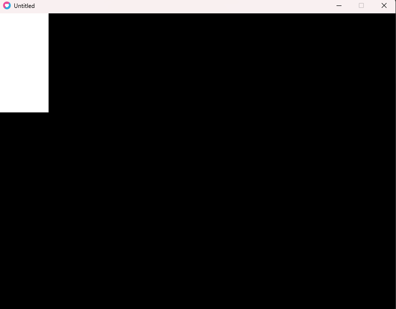

Programando com Lua e LÖVE Framework

Documentações Úteis:
1. Síntaxe Básica da Linguagem Lua.
2. LÖVE Wiki - Documentação do LÖVE.
3. Windfield - Documentação e Readme.
1. Introdução Básica
Essa parte do documento serve apenas para dar uma introdução geral à linguagem Lua.
1.1. Variáveis
Variáveis em Lua são declaradas da seguinte forma:
var = "Olá, Mundo!"
A linguagem é fracamente tipada, ou seja, não precisamos declarar o tipo de dado, observe:
myNum = 100 --Number
myOtherNum = 20.18 --Number
myString = "Hello World!" --String
myBool = true --Boolean
1.2. Condições
As condicionais são feitas com a seguinte sintáxe:
if myNum == 0 then
myNum = myNum + 1
end
Também temos o
if-then-else e o if-then-elseif-then-else.
if myNum > 1 then
result = "myNum is greater than 1"
elseif myNum < 1 then
result = "myNum is less than 1"
else
result = "myNum is equal to 1"
end
1.3. Loops
Lua tem dois tipos de Loops: While e For.
while contador <= 5 do
print(contador)
contador = contador + 1
end
O
for já é um pouco mais exótico, tendo uma sintáxe bem diferente da linguagem C, mas ainda seguindo o básico de variável, limite e step/passo.
for i = 1, 3, 1 do
print(i)
end
1.4. Funções
As funções em Lua são criadas com a keyword
function.
function increaseX(x)
return x + 1
end
E as mesmas são instanciadas com:
increaseX(10)
increaseX(var)
Podemos também fazer funções em uma única linha assim:
function pow(base, exp) return base^exp end
1.5. Variáveis Locais
Variáveis locais devem ser definidas como tal com a keyword
local.
function foo(x)
local var = x + 5
return var / 2
end
Caso contrário, ela será automaticamente definida como global.
2. Tables
As Tables da linguagem Lua são como arrays, porém diferentes em vários aspectos. Instanciamos uma table vazia da seguinte maneira:
table = {}
E podemos fazer uma table com valores do seguinte modo:
table = {10, 20, 30}
2.1. Pegando valores de uma Table
Pegamos um valor de uma table com a seguinte sintaxe:
table[2] -- Retorna 20
O motivo do retorno ser 20 e não 30 se dá ao fato que em Lua o índice das Tables começam em 1, e não em 0.
2.2. Inserindo valores em uma Table
Podemos inserir valores na nossa table de variadas formas. A mais comum é usando a função
table.insert():
table.insert(table, 50)
Porém, podemos também usar chaves nas tables, além de propriedades, tornando-os algo similar aos JSONs.
table["nome"] = "João" -- Exemplo com chaves
table.profissão = "Professor" -- Exemplo de propriedade
No caso das propriedades, é possível associar inclusive funções à elas. Observe o exemplo:
-- Declarando uma função:
function andar(x, y)
print("Andando para as coordenadas:", x, y)
end
-- Criando uma table e uma propriedade:
pessoa = {}
pessoa.andar = andar
-- Chamando a função:
pessoa.andar(10, 20) -- Saída: "Andando para as coordenadas: 10 20"
2.2.1. Usando Tables como Objetos
Usando as propriedades podemos usar tables essencialmente como objetos, atribuindo funções e propriedades à elas. Veja o exemplo:
-- Criando um objeto:
pessoa = {}
-- Adicionando propriedades:
pessoa.nome = "João"
pessoa.idade = 30
-- Adicionando funções:
function pessoa.andar(x, y)
print("Andando para as coordenadas:", x, y)
end
-- Chamando a função:
pessoa.andar(10, 20) -- Saída: "Andando para as coordenadas: 10 20"
Isso será útil para a criação de jogos com o LOVE, onde podemos criar objetos para os personagens, inimigos, etc. de forma mais organizada.
2.3. Iterando por tables
Podemos iterar por uma table e seus valores usando o loop
for-in com a função ipairs():
for index, value in ipairs(table) do
print(index)
print(value)
end
2.4. Tables Aninhadas
Podemos ter tables dentro de tables, tornando-as aninhadas. Veja o exemplo:
table = {
{10, 20, 30},
{40, 50, 60},
{70, 80, 90}
}
Para acessar um valor de uma table aninhada, fazemos:
table[2][3] -- Retorna 60
3. Usando LÖVE
LÖVE é um framework para a criação de jogos 2D em Lua. Ele fornece uma série de ferramentas e funções que facilitam o desenvolvimento de jogos, como manipulação de gráficos, áudio, física e entrada do usuário.
3.1. Instalando LÖVE
Para começar a usar o LÖVE, você precisa instalá-lo no seu sistema. Você pode baixar a versão mais recente do site oficial: .
Após a instalação, você pode verificar se tudo está funcionando corretamente executando o comando:
love --version
3.2. Estrutura Básica de um Projeto LÖVE
Um projeto LÖVE geralmente consiste em um arquivo principal chamado main.lua e outros arquivos Lua e recursos (imagens, sons, etc.) necessários para o jogo. O arquivo main.lua deve conter pelo menos três funções principais:
function love.load()
-- Inicialização do jogo
end
function love.update(dt)
-- Atualização do estado do jogo a cada frame.
end
function love.draw()
-- Desenho de gráficos na tela a cada frame.
end
Podemos ver melhor como essas funções funcionam com o seguinte exemplo usando
number:
function love.load()
number = 0
end
function love.update(dt)
number = number + 1
end
function love.draw()
love.graphics.print(number)
end
Note que ao executarmos isso, nosso "jogo" irá mostrar a variável number crescendo de 0 à infinito a cada frame.

3.3. Desenhando Gráficos
Vamos iniciar com elementos simples para serem desenhados em nossa tela. Usaremos a função
love.draw() e vamos desenhar um simples retângulo com a função love.graphics.rectangle(), ela recebe uma série de parâmetros, sendo eles mode, x, y, width e height:
function love.draw()
-- mode pode ser "fill" ou "line"
love.graphics.rectangle("fill", 0, 0, 100, 200)
end
Com isso, temos um retângulo em nosso jogo, veja:

Com isso, temos a base para começar a criar nossos jogos com o LÖVE. No proximo capitulo iremos começar a desenvolver um jogo de plataforma.
4. Desenvolvendo um jogo de plataforma com LOVE
Para iniciarmos o desenvolvimento de um jogo de plataforma usando o LOVE, precisamos primeiro nos preocupar com a física do jogo. Por mais que o LOVE tenha um módulo para isso, usaremos uma biblioteca que facilita o processo chamada
windfield.
O
windfield pode ser
baixado aqui.
Após baixar, extraia o arquivo e coloque a pasta windfield na pasta do seu projeto dentro de uma pasta chamada libs. Feito isso, vamos importar a biblioteca no nosso arquivo main.lua:
function love.load()
wf = require 'libs/windfield'
end
O primeiro passo para trabalhar com o windfield é iniciar um mundo físico. Vamos fazer isso no
love.load():
function love.load()
wf = require 'libs/windfield'
world = wf.newWorld(0, 800, true)
end
4.1. Fisica Básica com o Windfield
O primeiro parâmetro do
newWorld() é a gravidade, o segundo é a velocidade máxima de um corpo e o terceiro é se o mundo é sleepable ou não. Sleepable significa que os corpos que não estão se movendo não serão atualizados, economizando recursos.
Agora que temos um mundo físico, vamos criar um corpo para o nosso jogador. Vamos fazer isso no
love.load():
function love.load()
wf = require 'libs/windfield'
world = wf.newWorld(0, 800, true)
player = world:newRectangleCollider(100, 100, 50, 50)
end
O
newRectangleCollider() cria um corpo retangular com os parâmetros x, y, width e height. Agora que temos um jogador, vamos desenhá-lo na tela. Vamos fazer isso no love.draw():
function love.update(dt)
world:update(dt)
end
function love.draw()
player:draw()
end
O
world:update() atualiza o mundo físico e o player:draw() desenha o jogador na tela.
No caso, a função
player:draw não está desenhando o player em sí, mas sim a sua colisão.
Podemos inclusive testar a física utilizando um
platform = newCircleCollider() da seguinte forma:
function love.load()
wf = require 'libs/windfield'
world = wf.newWorld(0, 800, true)
player = world:newRectangleCollider(100, 100, 30, 50)
player:setType('dynamic')
platform = world:newCircleCollider(0,300,300)
platform:setType('static')
end
Aqui, criamos uma plataforma circular e a colocamos no canto inferior esquerdo da tela. O
setType('static') define que a plataforma é estática, ou seja, não se move. Já player:setType('dynamic') define que o jogador é dinâmico, ou seja, ele se move e é afetado pela física. Também temos o setType('kinetic') que é um corpo que não é afetado pela gravidade, mas é afetado por colisões.

Vamos adicionar mais um retângulo para, ao invés de nosso "player" cair, ele colidir com o retângulo. Vamos fazer isso no
love.load():
function love.load()
wf = require 'libs/windfield'
world = wf.newWorld(0, 400, true)
player = world:newRectangleCollider(100, 100, 30, 50)
player:setType('dynamic')
platform = world:newCircleCollider(0,300,300)
platform:setType('static')
platform = world:newRectangleCollider(0,300,1300,1500)
platform:setType('static')
end
Adicionando Movimentação e Salto
Vamos fazer com que nosso
player se mexa e salte de acordo com as setas do teclado. Ao usar o windfield, todo objeto possui a propriedade de um:
body: que é o corpo físico do objeto.
fixture: que é a colisão do objeto.
shape: que é a forma do objeto.
Tudo encapsulado em uma única entidade. Ou seja, todas as funções disponíveis em
love.Body estão disponíveis para nosso uso. O mesmo é válido para os outros dois. Caso queiramos fazer nosso player pular, por exemplo, podemos usar a função Body:applyLinearImpulse.
Vamos adicionar a seguinte função em nosso
main.lua:
function love.keypressed(key)
if key == 'up' then
player:applyLinearImpulse(0, -500)
end
end
Essa função determina que quando a setinha do teclado para cima for apertada, o
player irá pular. O applyLinearImpulse recebe dois parâmetros, x e y, que são a força aplicada no corpo. Infelizmente, com isso nosso player irá pular infinitamente, vamos corrigir isso posteriormente.
Por hora, vamos adicionar movimentação ao nosso
player. Vamos adicionar a seguinte função em nosso love.update(dt):
function love.update(dt)
world:update(dt)
local px, py = player:getPosition()
end
A função
player:getPosition() irá adicionar os valores de x e y da posição do nosso player às variáveis px e py para que possamos utilizá-las. Vamos adicionar a propriedadeplayer.speed:
function love.load()
wf = require 'libs/windfield'
world = wf.newWorld(0, 900, true)
player = world:newRectangleCollider(100, 100, 30, 50)
player:setType('dynamic')
player.speed = 200
platform = world:newCircleCollider(0,300,300)
platform:setType('static')
platform = world:newRectangleCollider(0,500,3000,1200)
platform:setType('static')
end
E então, em
love.update(), vamos adicionar o seguinte código:
function love.update(dt)
world:update(dt)
local px, py = player:getPosition()
if love.keyboard.isDown('left') then
player.setX(player, px - player.speed * dt)
elseif love.keyboard.isDown('right') then
player.setX(player, px + player.speed * dt)
end
end
Esse código permite a movimentação do nosso jogador ao apertarmos as setas do teclado, somando ou subtraindo sua velocidade.
Classes de Colisão
As classes de colisão são uma forma de organizar os objetos em grupos. Por exemplo, podemos ter uma classe de colisão chamada player para o nosso jogador e uma classe de colisão chamada platform para as plataformas. Vamos adicionar classes de colisão ao nosso jogo.
Vamos adicionar a seguinte função em nosso
love.load():
world:addCollisionClass('Player')
world:addCollisionClass('Platform')
Para associarmos um objeto à sua nova classe, adicionamos o parâmetro da seguinte forma em nosso
love.load():
player = world:newRectangleCollider(100, 100, 30, 50, {collision_class = 'Player'})
circle = world:newCircleCollider(0, 300, 300, {collision_class = 'Platform'})
platform = world:newRectangleCollider(0, 500, 3000, 1200, {collision_class = 'Platform'})
Para fazermos um teste, vamos declarar que
circle faz parte de uma collision_class que não interage com o jogador. Vamos adicionar a seguinte função em nosso love.load():
world:addCollisionClass('Non-collide')
circle = world:newCircleCollider(0, 300, 300, {collision_class = 'Non-collide'})
circle:setType('static')
Aqui definimos uma nova
collision_class chamada Non-collide. Agora podemos fazer a seguinte alteração na definição da Collision Class do nosso jogador:
world:addCollisionClass('Player', {ignores={'Non-collide'}})
Assim, resultando em o
player não colidindo com objetos dessa classe:

4.2. Ajustando Player para não ser afetado
Atualmente nosso
player é afetado até demais pela gravidade e acaba caindo com frequencia. Para corrigir isso, podemos adicionar uma nova propriedade a ele chamada de setFixedRotation():
player:setFixedRotation(true)
Isso fará com que nosso jogador não rode e seja afetado por outras colisões.
4.3. Adicionando colisões de dano
Agora que temos as Collision Classes, podemos fazer uma nova colisão de dano. Primeiro vamos adicionar uma nova classe e um novo objeto em
love.load():
danger = world:newRectangleCollider(500, 400, 100, 100, {collision_class = 'Danger'})
danger:setType('dynamic')
E então, dentro do nosso
love.update(), vamos adicionar:
function love.update(dt)
world:update(dt)
if player.body then
local px, py = player:getPosition()
if love.keyboard.isDown('left') then
player.setX(player, px - player.speed * dt)
elseif love.keyboard.isDown('right') then
player.setX(player, px + player.speed * dt)
end
if player:enter('Danger') then
player:destroy()
end
end
end
Fazendo o jogador pular
Para fazermos o jogador pular, adicionamos a seguinte linha de código em nosso
love.keypressed():
function love.keypressed(key)
if player.body then
if key == 'up' then
local colliders = world:queryRectangleArea(player:getX() - 15, player:getY() + 25, 30, 5, {'Platform', 'Danger'})
if #colliders > 0 then
player:applyLinearImpulse(0, -800)
end
end
end
end
Se a tecla pressionada for a tecla
'up' (para cima), a função realiza uma consulta na área retangular abaixo do jogador, usando world:queryRectangleArea. Esta consulta verifica se há algum objeto das classes 'Platform' ou 'Danger' dentro da área especificada.
Se houver pelo menos um objeto na área, o jogador recebe um impulso linear para cima, simulando um salto, através do método
player:applyLinearImpulse(0, -800).
Com base nisso, agora é impossível para o jogador pular infinitas vezes, pois ele só pode pular se estiver em contato com uma plataforma ou um objeto de perigo.
4.4. Adicionando gráficos e Animação
Primeiramente, é necessário termos uma sheet de sprites para animarmos e usarmos. Em nosso caso, usaremos o spritesheet da Cruz:

Para simplificar esse processo, iremos usar a biblioteca anim8 para lidar com a animação. Primeiramente, baixe a biblioteca aqui. Após baixar, extraia o arquivo e coloque a pasta anim8 na pasta do seu projeto dentro de uma pasta chamada libs. Feito isso, vamos importar a biblioteca no nosso arquivo main.lua em
love.load():
anim8 = require 'libs/anim8/anim8'
-- Criando uma nova table "sprites".
sprites = {}
sprites.player = love.graphics.newImage('caminho/para/spritesheet')
Agora, devemos montar uma grade no qual o sprite será dividido. Isso pode ser feito com o seguinte código:
-- Note que o calculo dos dois primeiros parâmetros são o tamanho da imagem divido pela
-- quantidade de sprites.
local grid = anim8.newGrid(48, 96, sprites.player:getWidth(), sprites.player:getHeight())
Agora, vamos criar as animações para o nosso jogador:
-- A animação é criada com o grid e a sequência de quadros.
animations = {}
animations.idle = anim8.newAnimation(grid('1-1', 1), 0.1)
animations.run = anim8.newAnimation(grid('1-5', 1), 0.1)
Com isso pronto, podemos adicionar a seguinte função em nosso
love.draw():
function love.draw()
if player.body then
local px, py = player:getPosition()
player.animation:draw(sprites.player, px, py) -- Pode ser necessário ajustar a posição.
end
world:draw()
end
Agora, para animar o jogador, vamos atualizar nosso
love.update() da seguinte maneira:
function love.update(dt)
world:update(dt)
if player.body then
local px, py = player:getPosition()
if love.keyboard.isDown('left') then
player.animation = animations.run
player.setX(player, px - player.speed * dt)
elseif love.keyboard.isDown('right') then
player.animation = animations.run
player.setX(player, px + player.speed * dt)
else
player.animation = animations.idle
end
if player:enter('Danger') then
player:destroy()
end
end
player.animation:update(dt)
end
(/chap)